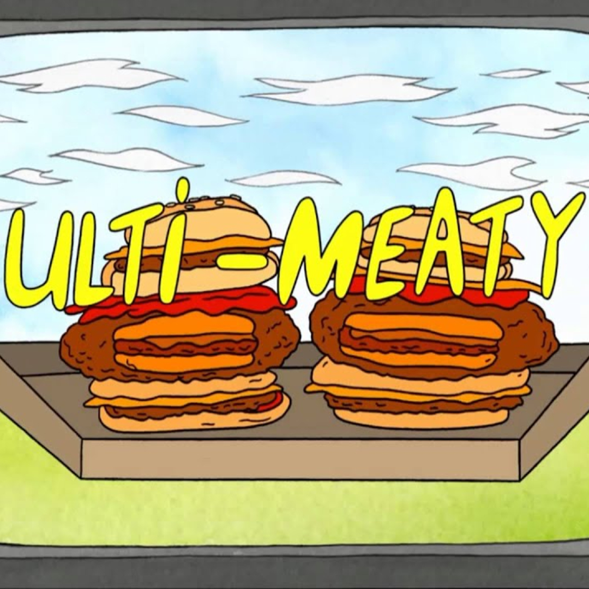

Ultimeatum

Description
The Ultimeatum is an iconic burger feautred in the
Cartoon Network series "Regular Show".
"The Ultimeatum is a cheeseburger stuffed inside a cheeseburger
with two deep fried cheeseburgers as buns, and then we add our
special ketchup that we get from the Himalayas."
- Head Chef Ajay Maldonaldo
Ingredients
Steps
- Pray to god that your employer lets you have some time off to go
buy an Ultimeatum from the truck.
- If that fails, try to sneak away and buy the burger while your
boss isn't looking.
-
If that fails, create clones of yourself to try and convince your
boss into thinking you're working, so that you can sneak off
and buy an Ultimeatum.
-
If the clones are evil, beat them up so you can eat your Ultimeatum
in peace.
-
If your boss eats your Ultimeatum after your epic face-off against
your evil clones, CRY FOREVER AND EVER AND EVER AND